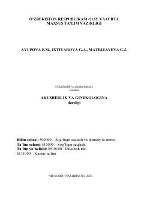

AVTibbiyot talabalari uchun akusherlik va ginekologiya fanidan fundamental darslik.
Ushbu darslik tibbiyot oliy o'quv yurtlari talabalari uchun mo'ljallangan bo'lib, homiladorlik, tug'ruq va chilla davrlaridagi fiziologik hamda patologik jarayonlarni qamrab oladi. Kitobda ayollar jinsiy a'zolari kasalliklari, ularning diagnostikasi, oldini olish va zamonaviy davolash usullari batafsil yoritilgan.